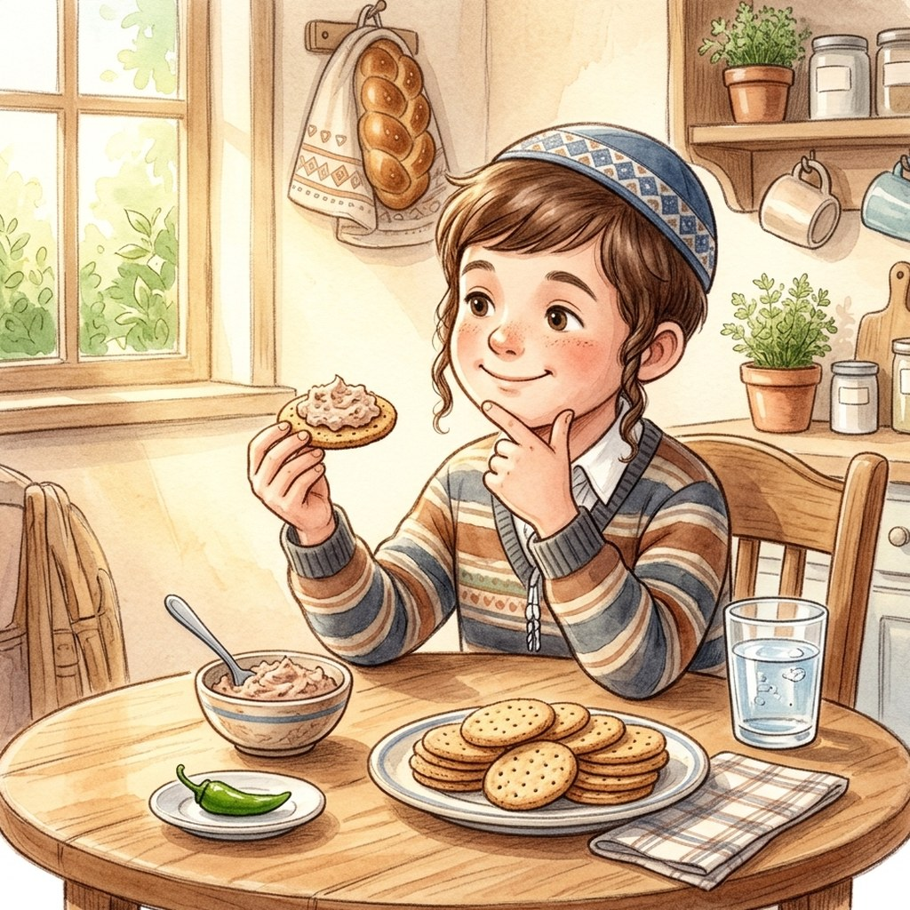

I've Got a Clue!
The Main Food and the Side Food
About this episode: At his cousin's bar mitzvah kiddush, Yedani builds a tower of tuna on one cracker. Does the cracker need a bracha too? The Rav explains what ikar and tafel mean, and why we don't make a bracha on the water we drink after a hot pepper.
0:00
--:--
We couldn't load the recording. Check your internet connection and try again.